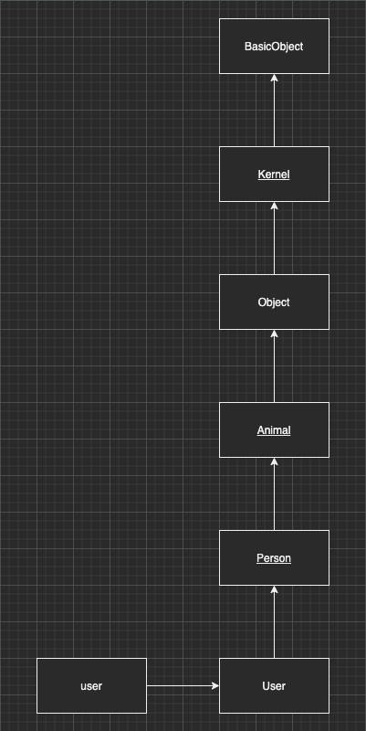

メタプログラミングRuby 1-3章
今回はしばらく積読となっていたメタプログラミングRubyを読んだので、内容についてまとめていきます。
想定読者
想定読者については以下のように書かれていました。
- 最初の章のコードを何の問題もなく理解できるひと # いくつもサンプルコードがでてくるので割愛します。
- 配列を繰り返すのにどのようなコードを書くか？
eachメソッドを思い浮かべたなら文章を読み進めるだけのRubyの知識がある。for文を思い浮かべたならRuby初心者 → 初心者でもRuby入門書を読みつつメタプロに入門できる
- RubyやRuby on Railsの内部の動きを深く理解したい人
個人的にはRubyの開発プロジェクト経験がある方なら読めると思いました。
本書でできること
本のタイトル通りですが、Rubyを使ったメタプログラミング ができるようになります。 メタプログラミングとはなんぞや？という話ですが、それも本書で詳しく解説されています。 また、メタプログラミングをするためにRubyやRuby on Railsの内部の動きを探っていくことで言語仕様の理解が深まります。
1章 頭文字M
冒頭で「 メタプログラミングとは、コードを記述するコードを記述することである。 」と書かれています。 また途中には「 メタプログラミングとは、言語要素を実行時に操作するコードを記述することである。 」と書かれています。
この定義の例として、Active Recordが挙げられています。 例えばRubyでMovieクラスがあるとして、Movieクラスのオブジェクト内部の変数を読み書きしたい場合はアクセサメソッドを用意する必要があります。 しかし、ActiveRecord::Baseを継承することで、コード実行時にアクセサメソッドを定義してくれます。 これが先程挙げた、言語要素を実行時に操作するコードを記述するを表していますね。
Rubyはスクリプト言語であり、コンパイルをしなくてもいいので実行時に言語要素の殆どにアクセスが可能です。だから、コード実行時にメソッドを定義したり、もともとの定義を書き換えたりできます。メタプログラミングと非常に相性の良い言語がRubyであり、メタプログラミングを習得することでRubyの力をより引き出すことができます。
2章 月曜日：オブジェクトモデル
この章からは主人公のボブとメンターのビルの対話形式で進行していきます。
- classキーワードで既存のクラスを再オープンして、その場で変更を加えることができる。 => オープンクラス
- オープンクラスの性質を利用して既存クラスにメソッドを追加したり、既にクラスに定義されているメソッドを再定義する。 => モンキーパッチ
- モンキーパッチをすると、以後そのクラスを使う際にも定義が変わってしまうので非常に影響が大きい。Refinementsを使うと、ファイルやモジュール定義が終わるところまでにパッチを当てるスコープを制限することができる。
module PrintExtension
refine Kernel do
def puts
'puts!!!'
end
end
end
class User
puts # => nil
using PrintExtension
puts # => "puts!!!"
end
puts # => nil
上は極端な例だが、Refinementsを使えばメソッドのオーバーライドによる予期しないバグを防ぐことができるかもしれないですね。
- インスタンスメソッドは
#method、クラスメソッドは.methodで表す。- 例えばクラスやオブジェクトが
methodを持っているか調べる際は、obj.methods.grep(/me/)を使う。
- 例えばクラスやオブジェクトが
- クラスは
BasicObjectまで続く継承チェーンがある。
class User
include Animal
include Person
end
user = User.new
user.print
pry(main)> User.ancestors
=> [User,
Person,
Animal,
Object,
PP::ObjectMixin,
Kernel,
BasicObject]
// PP::ObjectMixinはpryが勝手に用意した整形用の定数でirbでは表示されない
 moduleをclassにincludeすることで、継承チェーンで言うとclassの真上にmoduleが挿入され、それより上のチェーンは押し上げます。 includeでなくprependを使えば、classの下にmoduleが挿入されます。
ObjectクラスはKernelモジュールを継承しているので、Kernelにメソッドを追加することでカーネルメソッドが全てのオブジェクトで使えるようになります。
オブジェクトのメソッドはクラス（モジュール）に住んでおり、継承チェーンの中で複数のクラスが同名のメソッドを持っていた場合は、先に呼ばれたクラスのメソッドが使わます。
userの print がどのクラスのメソッドなのか探索する際には、Userクラスから上に向かって調べていくとよいでしょう。
pry(main)> Kernel.methods.grep(/print/)
=> [:sprintf,
:printf,
:print,
:pretty_print,
:pretty_print_cycle,
:pretty_print_instance_variables,
:pretty_print_inspect]
- メソッドを定義する際は、メソッドのレシーバが
selfとなる。- メソッド定義の外（クラスやモジュールの中）での
selfは、そのクラス自身がselfになる。 selfは省略可能。省略した場合も、レシーバがselfのメソッドだとされる。- 自分以外のオブジェクトを呼び出す際には明示的にレシーバにそのオブジェクトを指定する必要がある。一方で、privateメソッドは明示的にレシーバを指定して呼び出すことはできない。そのため、privateメソッドは自分以外は呼び出すことができない。
Object#sendを使うことで、privateメソッドにアクセス可能
- メソッド定義の外（クラスやモジュールの中）での
3章 火曜日：メソッド
- 動的メソッド
Object#sendを呼び出すことで、メソッドを引数に取ることができる。 Module#define_methodを使えば、メソッドをその場で定義できる。（実行時にメソッド名を決定できる）- BasicObjectクラスにはメソッドが見つからなかった際に最終的に呼び出される
method_missingが用意されている。method_missingを再定義することで、存在しないメソッドを呼び出すことができる。 => ゴーストメソッド
「可能であれば動的メソッドを使い、仕方がなければゴーストメソッドを使う」
と締めくくられていましたが、 #send もクラスやモデル、テーブル等の設計次第では使う場面はあまりない気がしました。（それでもメソッドを引数にとれるのは便利。。）
メタプロRubyのサンプルコードはテーブル設計がひどく、そのようなプロジェクトにあたった際の対症療法としてはいいかもしれません。 #send を使いたいと思った時点で設計を見直してもいいかもしれないですね。
とはいえRubyは非常に柔軟で強力な言語だと再認識しました。
メタプロはとりあえず「難しそう」という先入観が強く後回しにしていましたが、読み始めるとひたすらにRubyという言語を掘り下げていく内容で、夢中になって読み進めることができています。これ以降の章も別の記事でまとめたいと思います。